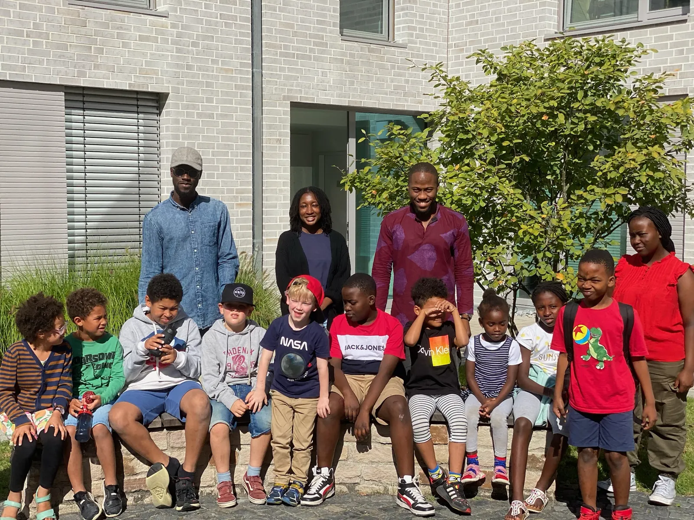
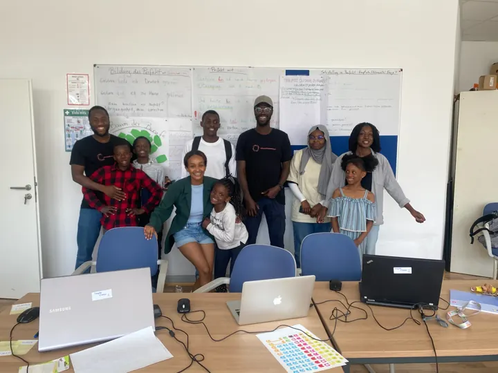
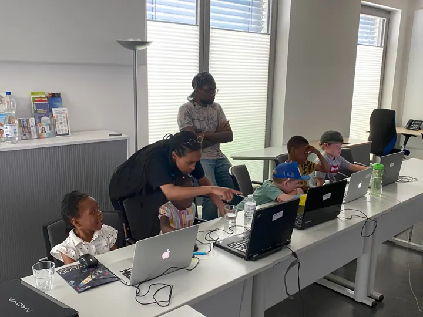
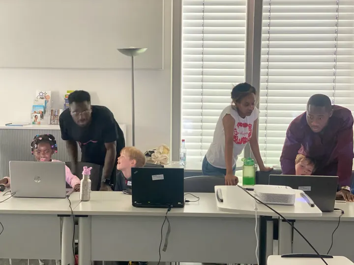

Über unser Projekt
Eine von Freiwilligen getragene Initiative, die Kindern aus unterprivilegierten Gruppen, insbesondere mit Migrationshintergrund, den Weg in die digitale Welt ebnet.
Kinder durch Programmieren stärken
Unser Projekt Afro Code Academy wird ausschließlich von engagierten Freiwilligen geleitet, denen es am Herzen liegt, Kindern aus unterprivilegierten Gruppen, insbesondere Kindern mit Migrationshintergrund, die Fähigkeiten und das Wissen zu vermitteln, um in der digitalen Welt erfolgreich zu sein. Wir glauben, dass wir diesen Kindern durch die Vermittlung von Programmierkenntnissen helfen können, neue Möglichkeiten zu erschließen und ihnen den Weg in eine bessere Zukunft zu ebnen.
Zu unserem Team von Freiwilligen gehören erfahrene Programmierer, Pädagogen und Mentoren, die sich dafür einsetzen, jedem Kind, das an unserem Programm teilnimmt, qualitativ hochwertigen Unterricht und Unterstützung zu bieten. Wir bieten eine Reihe von Kursen und Workshops an, die für Lernende aller Altersgruppen und Fähigkeitsstufen geeignet sind, und wir bemühen uns, eine unterhaltsame und ansprechende Lernumgebung zu schaffen, in der sich die Schüler entfalten können.

Immer kostenlos
Keine Gebühren – und das bleibt so.
Von Freiwilligen
Programmierer, Pädagogen und Mentoren.
Alle Niveaus
Von Anfängern bis zu erfahrenen jungen Programmierern.
Gemeinsam können wir etwas bewirken.
Vielfalt & Integration in der Tech-Branche
Neben der Vermittlung von Programmierkenntnissen setzen wir uns auch für die Förderung von Vielfalt und Integration in der Tech-Branche ein. Wir glauben, dass jeder die Möglichkeit haben sollte, seinen Leidenschaften nachzugehen und seine Ziele zu erreichen, unabhängig von seinem Hintergrund oder seinen Lebensumständen.
Wir hoffen, dass wir mit unserem Programm eine neue Generation von Programmierern inspirieren können, die sich in der Welt einen Namen machen und positive Veränderungen in ihren Communities bewirken werden. Wenn Sie unsere Vision teilen und das Projekt unterstützen möchten, melden Sie sich gerne bei uns. Wir würden uns sehr freuen, weitere Freiwillige in unserem Team willkommen zu heißen.


Flexibel, kostenlos und für alle
Unsere Kurse sind nicht nur kostenlos, sondern auch so konzipiert, dass sie flexibel sind und sich an Lernende aller Niveaus richten. Ganz gleich, ob ein Kind gerade erst mit dem Programmieren anfängt oder bereits fortgeschritten ist: Wir haben Kurse und Workshops, die allen Bedürfnissen entsprechen und jedem Kind helfen sollen, seine individuellen Ziele zu erreichen.
Wir sind dankbar für die Unterstützung durch unsere Freiwilligen, die es uns ermöglichen, diese kostenlosen Kurse für Kinder aus marginalisierten Gruppen anzubieten. Gemeinsam können wir diesen Kindern helfen, ihr Potenzial zu entfalten und sich auf den Erfolg in der digitalen Welt vorzubereiten.
